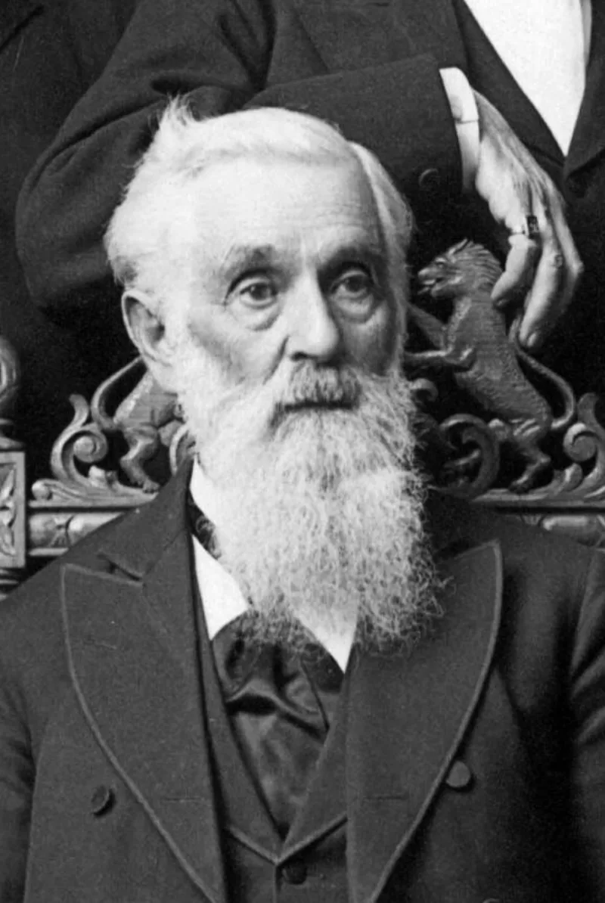

150 years of teaching, downplayed to Time magazine
UnrefutedNo good counter-argument has been published by LDS scholars.
The couplet
"As man now is, God once was; as God now is, man may be." Lorenzo Snow wrote it in 1840. Joseph Smith's King Follett sermon of 1844 ratified it.
Prophets and manuals have taught it ever since. The Teachings of the Presidents: Lorenzo Snow manual features it.
What Hinckley told the press
In 1997 Richard Ostling of Time asked President Hinckley whether God the Father was once a man. He answered: "I don't know that we teach it.
I don't know that we emphasize it… I understand the philosophical background behind it, but I don't know a lot about it." He told the San Francisco Chronicle it was "more of a couplet than anything else."
What the 2014 essay does
Becoming Like God affirms the second half firmly. People may become like God.
It handles the first half — God's own past as a man — with studied vagueness.
Their answer, at full strength
That Hinckley was answering narrowly. The church does not emphasise or elaborate the doctrine, because little has been revealed about it.
He was not denying it. At the next General Conference he said the news reports had been incomplete.
And the 2014 essay does affirm that humans may become like God, while noting that scripture says little about God's past.
How strong is this argument?
Strong for you, and note what it is about. This case is not about the doctrine itself; that is covered elsewhere.
It is about candour. The same church that publishes a manual built around the couplet had its prophet tell national media "I don't know that we teach it." Ronald Huggins traced its use in church curricula in the Journal of the Evangelical Theological Society in 2006.
Most members have learned it. Showing them that answer tends to land.
What to say
"Have you seen what President Hinckley told Time magazine about the couplet?"



How they answer this — at its strongest
He answered narrowly. Little has been given on it, so the church says little.
Apologists say Hinckley was answering narrowly.
The church does not stress or elaborate the doctrine, because little has been revealed about it. He was not denying it.
Hinckley told the next General Conference that the news reports were 'incomplete'.
And the 2014 essay Becoming Like God affirms that humans can become like God, while noting that scripture says little about God's past.
The verdict
Strong for you, and it is about candour: a manual teaches what the prophet downplayed.
Grade this on the candour gap, not on the doctrine itself. The doctrine is the exalted-man case, covered separately.
The same church that publishes a prophet's manual built around the couplet had its sitting prophet tell national media 'I don't know that we teach it'. Either the prophet did not know his own doctrine, or he was managing its public image. Both are problems for a church claiming prophetic clarity.
Ronald Huggins, in the Journal of the Evangelical Theological Society in 2006, traced the couplet's use in church curricula. So 'we don't really teach it' is documentedly false.
This is conversationally strong. Most members have sung 'If You Could Hie to Kolob' and learned the couplet, and showing them Hinckley's answer tends to land.
Sources
- Ronald Huggins, 'Lorenzo Snow's Couplet,' JETS 49/3 (2006)
- Time interview text and context (Aug 4, 1997), compiled
- Gospel Topics essay: 'Becoming Like God'
- MRM on Richard Mouw and the couplet's status